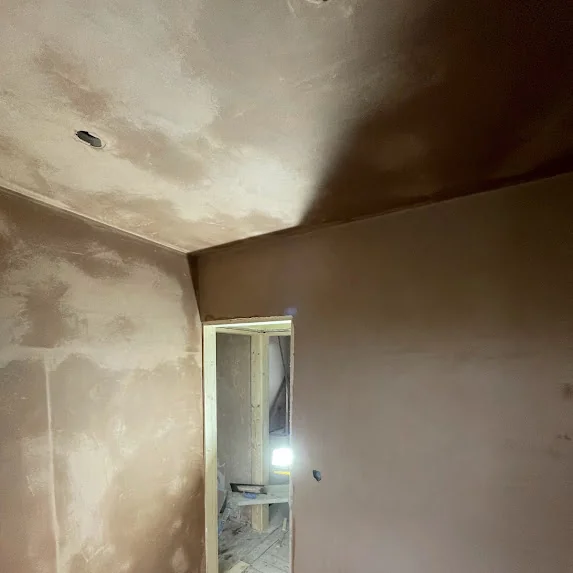
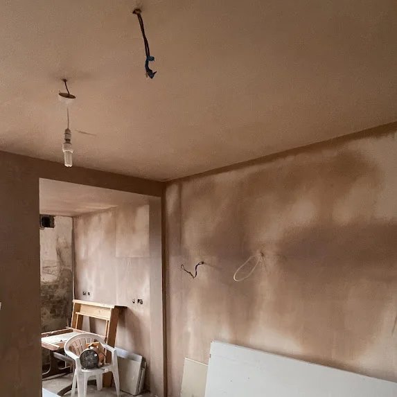

Lath &
Plaster
Sheffield.
Cracked, bulging or falling lath and plaster ceilings and walls in older Sheffield homes: repaired, overboarded or replaced. Honest advice on which. Indoor work, all winter. Zero deposit.
A lath and plaster ceiling or wall can usually be repaired, overboarded or replaced, depending on how much of it is still holding on. Small areas of loose plaster can be cut back and patched. A ceiling that is cracked and sagging but still secure is often overboarded: new plasterboard screwed through it into the joists and skimmed, which costs about £250–£350 for a standard room. A ceiling that is coming down is stripped out and replaced. Free survey, no deposit.
Lath and Plaster Sheffield — Repairs, Overboarding & Replacement
P&R Solutions repairs and replaces lath and plaster in older homes across Sheffield, every postcode from S1 to S36. Most houses built before the 1930s, the Victorian and Edwardian terraces and villas of Walkley, Crookes, Nether Edge, Sharrow and Hillsborough among them, were finished with lime plaster pushed onto thin timber laths nailed across the joists and studs. After a hundred years or more, that plaster lets go.
It holds on by “nibs”: the plaster that squeezed between the laths and curled over the back. Vibration, leaks, damp and old age snap those nibs, and the plaster starts to crack, bulge and sag. A bulging lath and plaster ceiling is heavy, so it is not something to leave and keep an eye on for years.
There are three ways to deal with it, and we say which suits your house at the survey. A small loose area can be cut back to sound plaster and patched and skimmed. A ceiling that is cracked and uneven but still secure is often overboarded: new plasterboard screwed through the old ceiling into the joists, then skimmed. A ceiling or wall that is coming away is taken down and replaced with plasterboard and a skim.
Taking down lath and plaster is the dirtiest job in plastering: it brings down a century of dust and a lot of rubble. We sheet and screen the room, bag the waste, and leave the house clean at the end of each day. If the ceiling can be safely overboarded instead, we will tell you, because it avoids most of that mess.
Lath and plaster work is indoor work, so we do it all through the winter. Every job is covered by our 5-year workmanship guarantee and our no-deposit policy. For ceilings in newer houses, see our ceiling plastering page. Call 07595 399525 or request a quote online.
Old Houses. Old Plaster. Done Right.

Walkley S6 terrace: ceiling crack repaired and skimmed out flat, walls stripped, re-bonded and skimmed.
The right fix depends on how much of the old plaster is still holding. These are the signs we look for, and what each one usually means.
Get a Quote ↗If the ceiling does not move when pressed gently and only shows cracks, it can often be repaired: cracks cut out and filled, scrim-taped and the ceiling skimmed. It keeps the original ceiling and costs the least.
A bulge means the plaster has let go of the laths in that area. If it is a small area, the loose plaster is cut back to sound edges, the laths are checked and the hole is made good and skimmed.
This is where overboarding usually wins. New plasterboard is screwed through the old ceiling into the joists, which holds the old plaster in place and gives a new flat surface to skim. Far less mess than taking it down.
A ceiling that has dropped away from the joists, or is shedding pieces, is taken down. The laths and plaster come out, the joists are checked, and new plasterboard goes up, taped and skimmed.
Water softens old plaster and rots laths. Once the leak is fixed and the area has dried out, the damaged section is cut out and replaced, or the ceiling is overboarded if the damage is spread.
Older Homes Across Sheffield & South Yorkshire.
Crookes, S10
Victorian terrace, strip and re-plaster
Victorian terraced property. Crookes has a high density of older terraces where the plaster is often original and failing. Full strip and re-plaster from bonding coat to finish.
Request Similar ↗Walkley, S6
Terrace ceiling crack repair
Living room on a terraced house. Coving removed, ceiling crack repaired and skimmed out flat, walls stripped, re-bonded and skimmed. Completed in one day.
Request Similar ↗
Fulwood, S10
New plasterboard ceiling
Plasterboard fixed to the joists, every joint scrim-taped, then skimmed flush: the same finish an overboarded or replaced lath ceiling gets.
Request Similar ↗How We Deal With Lath & Plaster.
Crookes S10: original failing plaster stripped and the room re-plastered.
Every lath and plaster job starts the same way: finding out how much of the old plaster is still holding on.
Book a Survey ↗Survey & Advice
We check how firmly the plaster is holding, look for leaks or damp behind it, and tell you whether it should be repaired, overboarded or replaced, with a price for each where more than one would work.
Protect the House
Floors covered, doorways screened, furniture moved out or sheeted. Light fittings need taking down or making safe by an electrician before we start.
Repair, Overboard or Strip
Loose plaster cut back to sound edges, or new plasterboard screwed through the old ceiling into the joists, or the laths and plaster taken down and bagged up and the joists checked.
Board, Tape & Bond
New plasterboard fixed where needed, joints and repair edges scrim-taped, and any patch built back up flush with the surrounding plaster.
Skim & Hand Over
A finish skim over the whole surface so no repair shows. Dry in 2 to 4 days, longer in a cold room. We walk you round it before you pay. 5-year guarantee. Zero deposit.
Lath & Plaster Prices Sheffield.
Overboarding is priced like a new board and skim. Repairs and strip-outs depend on the size and state of the ceiling, so they are quoted after a survey: free, itemised, no obligation.
- ✓ Board into joists
- ✓ Old plaster held in
- ✓ Typically £250–£350
- ✓ Skim finished
- ✓ Loose plaster cut back
- ✓ Laths checked
- ✓ Made good
- ✓ Skimmed to match
- ✓ Laths and plaster down
- ✓ Waste bagged
- ✓ New board to joists
- ✓ Skim finished
Free, itemised quotation — no obligation
We survey, measure and quote every lath and plaster job individually. Zero deposit, pay only on completion.
118 Reviews. 5.0 Stars. Every time.
“Chris plastered my living room and did such a great job we had him back to do the kitchen renovation. We will be using him for any other works required. Highly recommend from a price and quality standpoint.”
Tom Smith
Living room · Sheffield
“Fantastic plasterer and nice man did me a ceiling and wall with light fading and made a superb job at reasonable price.Cannot recommended or praise him high enough.”
stephen acaster
Ceiling & wall · Sheffield
Common Questions About Lath & Plaster Answered.
What Sheffield homeowners with older houses ask us about lath and plaster. Click any question for the full answer.
Call 07595 399525 ↗Lath and plaster is how most ceilings and many internal walls were built before plasterboard took over in the 1930s. Thin timber strips, the laths, were nailed across the joists or studs with small gaps between them, and lime plaster was pushed on so it squeezed through the gaps and gripped the back.
Yes, where most of it is still holding. Loose areas are cut back to sound plaster, the laths are checked, and the area is built back up and skimmed. If large areas have let go, overboarding or replacing the ceiling usually lasts better and costs less than many patches.
Yes, if the ceiling is still secure enough. New plasterboard is screwed through the old ceiling into the joists, which holds the old plaster in place, and the new board is taped and skimmed. It avoids taking the old ceiling down, which is the messiest part of the job.
Overboarding a lath and plaster ceiling is priced like a new board and skim, typically £250 to £350 for a standard room. Patch repairs and full strip-outs depend on the size and condition of the ceiling, so we price them after a free survey.
It can be. A lath and plaster ceiling is heavy, and a bulge or sag means the plaster has let go of the laths. If a ceiling is visibly dropping or shedding pieces, keep people out from under it and get it looked at quickly.
Very. It brings down the plaster, the laths and years of dust from above. We sheet and screen the room, bag the waste and clean up at the end of each day. Where a ceiling can be safely overboarded instead, we will say so.
Yes. Internal stud walls in older houses are often lath and plaster too. Cracked or loose areas can be cut back and patched, or the wall can be boarded and skimmed if too much of it has let go.
Yes. It is indoor work, so we do it all year. The new plaster needs some gentle heat in the room to dry, but not fan heaters blasting on it.
Get Your Free Survey Today.
We survey and quote every lath and plaster job individually, and tell you honestly whether it should be repaired, overboarded or replaced. No obligation. Zero deposit.
Lath & Plaster Across All of Sheffield
We repair and replace lath and plaster throughout Sheffield, every postcode from S1 to S36, with the most work in the older terraces and villas of S6, S7, S10 and S11. No call-out charge, no travel premium.
More From P&R Solutions
One company covering every plastering and rendering service across Sheffield — one standard, one guarantee, one call.